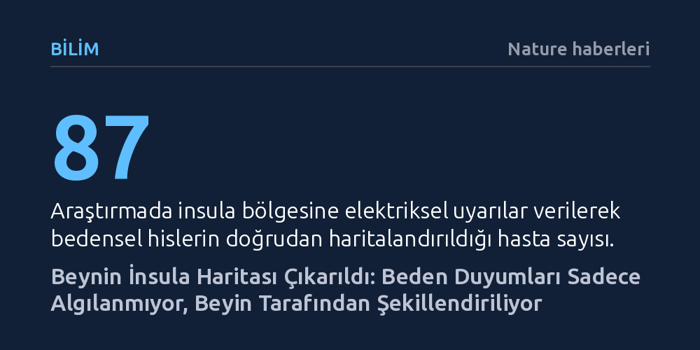

BILIM · Nature haberleri · 2026-10-22
Beynin derinliklerindeki insula bölgesini ayrıntıyla haritalandıran araştırmacılar, bu yapının bedensel hisleri yalnızca kaydetmeyip bizzat şekillendirdiğini gösterdi. Bulgular, yüksek bilişsel merkezlerin insulayla işbirliği yaparak ağrı ve bulantı gibi duyumların nasıl hissedileceğini doğrudan etkilediğini ortaya koyuyor.
Ağrı ve bulantı gibi hislerin bedenden gelen pasif uyarılar olmadığını, beynin bu duyumları düşünce ve duygularla harmanlayarak aktif biçimde kurguladığını gösteriyor.

İnsan beyninin en korunaklı ve anlaşılması güç bölgelerinden biri olan insular korteks (insula), ilk kez bu denli yüksek çözünürlük ve ayrıntıyla haritalandırıldı. Beyin kıvrımlarının derinliklerine gömülü olan bu yapı; ağrı, sızı, mide bulantısı ve iç organ hareketleri gibi bedenin içinden yükselen tüm fiziksel sinyallerin ana durağı olarak biliniyor. Ancak bölgenin zorlu anatomik konumu, bugüne dek oradaki iş bölümünün nasıl organize olduğunu anlamayı neredeyse imkânsız kılıyordu.
Stanford Üniversitesi liderliğinde yürütülen yeni çalışma, insulanın rastgele çalışan homojen bir doku değil, son derece özelleşmiş üç farklı alt merkezden oluşan bir komuta üssü olduğunu ortaya çıkardı. Haritaya göre bölgenin bir kısmı vücudun belirli noktalarında hissedilen acıyı işlerken, bir başka alt bölge iç organlardan kaynaklanan bulantı ve baskı gibi hisleri üretiyor. Ön tarafta yer alan üçüncü bölge ise biliş ve duyguyla ilgili diğer beyin alanlarıyla kesintisiz bir iletişim kuruyor.
İnsulayı incelemek bugüne kadar nörobilimcilerin önündeki en büyük engellerden biriydi. Şimdiye dek yapılan çalışmalar, genellikle manyetik rezonans gibi dışarıdan görüntüleme tekniklerine dayanıyordu. Ancak bu yöntemler yalnızca bir his oluştuğunda bölgede genel bir kan akışı artışı kaydedebiliyor, hangi hücre grubunun hangi bedensel deneyimi doğrudan tetiklediğini kanıtlamaya yetmiyordu.
Araştırmacılar nedensel bir harita çıkarabilmek için doğrudan insulanın farklı noktalarına zayıf elektriksel akımlar verip ortaya çıkan hisleri gözlemlemeyi hedefledi. Sağlıklı bireylerin beynine sırf araştırma için elektrot yerleştirmek etik dışı olacağından, ekip farklı tıbbi tedaviler nedeniyle beyinlerine zaten elektrot takılmış olan 87 hastayla işbirliği yaptı. Bu hastalara uygulanan kontrollü elektriksel uyarılar, insulanın hangi noktasının bedende tam olarak hangi hissi uyandırdığını ilk kez doğrudan ve kesin bir biçimde gösterdi.
Elde edilen sonuçlar, tıp ve nörobilim çevrelerinde bedensel duyumların algılanışına dair yerleşik kabulleri temelden sarsıyor. Bugüne kadar insulanın, bedenden gelen sinyalleri bir aracın gösterge paneli gibi sadece pasif biçimde okuduğu varsayılıyordu. Oysa yeni veriler, yüksek bilişsel merkezlerin yer aldığı beyin kabuğu ile insula arasında çift yönlü güçlü bir hat bulunduğunu ve beynin fiziksel hisleri bizzat şekillendirdiğini gösteriyor.
Çalışmanın araştırmacılarından Josef Parvizi'nin belirttiği gibi, insula "yalnızca bedeni okumakla kalmıyor; bedenin nasıl hissedilmesi gerektiğine dair hikâyeyi de kısmen yönlendiriyor." Uzmanlara göre bu keşif, zihinsel durumumuzun, stres seviyemizin veya beklentilerimizin kronik ağrı ve fiziksel rahatsızlıkları nasıl derinden değiştirebildiğini anlamada yepyeni bir ufuk açıyor.